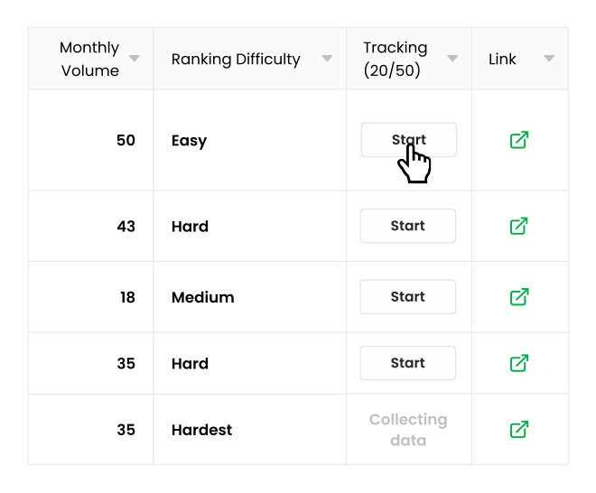

Step 1: Review the keywords your website already ranks for.
Under the Tracking column click the Start button and We will automatically start tracking that keyword for you!
Monitor the Google rankings for the most important keywords for your business. Once you add tracking to a keyword you will be able to see changes over time and also receive updates as well as objectives/alerts when important ranking changes occur.
Back to My KeywordsUnder the Tracking column click the Start button and We will automatically start tracking that keyword for you!
Now you can easily review historical ranking changes for any Tracked keyword. For instance, if you made a change to a page that ranks now you can easily see if your changes affected keyword rankings!
We'll automatically monitor all the keywords you've added tracking to and update you regularly on how they are doing and if we think there is room for improvement. If we notice any significant changes we'll also alert you immediately!